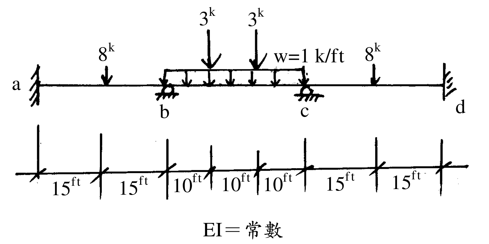
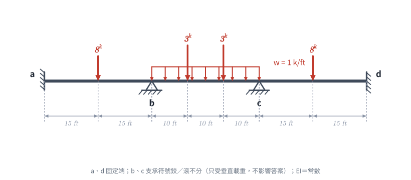
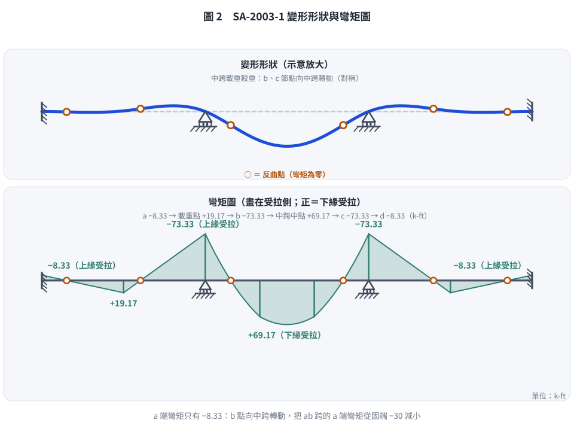

📄 題目正本（考卷原文、附圖與判讀清單；不含解法）
SA-2003-1 題目正本
本檔只記錄考卷上寫了什麼、圖上畫了什麼，不含任何解法。解析見同資料夾
SA-2003-1.md。
判讀清單經使用者確認前，狀態為「待確認」；確認後本檔原則上不再修改（改動須回考卷原圖並記 log）。
| 項目 | 內容 |
|---|---|
| 考卷 | raw/exams/SA-2003_結構學.pdf，第 1 頁（全一頁），第一題 |
| 考年 | 2003（民國 92 年）專技高考結構工程技師「結構學」 |
| 配分 | 25 分 |
| 附圖 | SA-2003-1-fig-2.png（本次從考卷擷取 500 dpi；既有 SA-2003-1-fig-1.png 保留） |
| 判讀狀態 | 已確認（2026-11-07 使用者確認；原轉錄：2026-11-07 轉錄；PyMuPDF 110 dpi 整頁＋300–900 dpi 局部放大（附圖為內嵌點陣圖，掃描品質）；盲讀於開啟解析前完成） |
1. 考卷原文（逐字）
一、試以彎矩分配法，求解各節點彎矩。（25 分）
2. 考卷給的公式、附表與參數
- 考卷沒有給任何參考公式或附表。
- 給定：EI＝常數（圖下標註「EI＝常數」）。
- 考卷沒有給 E、I 數值，也沒有給支承沉陷。
- 卷首注意事項：㈠不必抄題，作答時請將試題題號及答案依照順序寫在試卷上，於本試題上作答者，不予計分。㈡可以使用電子計算器，但需詳列解答過程。
- 考試時間：二小時。代號 00460，全一頁。
3. 附圖

證據圖 SA-2003-1-fig-2.png（500 dpi，自考卷擷取；舊證據圖 SA-2003-1-fig-1.png 有游標雜訊，保留不改）
圖面文字照錄：3k、3k、8k、w=1 k/ft、8k、a、b、c、d、15ft、15ft、10ft、10ft、10ft、15ft、15ft、EI＝常數
4. 判讀清單
| # | 項目 | 判讀 | 圖上／題文依據 | 把握 |
|---|---|---|---|---|
| 1 | a、d 端 | 固定端（直立粗線加斜剖線） | 300 dpi 放大：a 在左牆、d 在右牆，皆為牆面剖線 | 確定 |
| 2 | b、c 支承 | 梁下支承，符號為半圓頂加地面剖線；鉸或滾無法明確區分。本題只有垂直載重、不計軸向變形，兩者對答案無影響 | 900 dpi 放大：圓頂下無滾輪、也無明確三角形 | 確定（解讀）；使用者確認 |
| 3 | 跨長 | ab＝30 ft、bc＝30 ft、cd＝30 ft | 尺寸線 15｜15｜10｜10｜10｜15｜15 ft，刻度對齊 a、b、c、d | 確定 |
| 4 | ab 跨載重 | 8k 向下，作用於距 a 15 ft（跨中） | 箭頭對齊第一個 15 ft 刻度 | 確定 |
| 5 | bc 跨均佈 | w＝1 k/ft 向下，自 b 至 c 滿跨 | 均佈載重框左右端對齊 b、c | 確定 |
| 6 | bc 跨集中載重 | 兩個 3k 向下，分別在距 b 10 ft、20 ft 處（三分點） | 兩箭頭對齊兩個 10 ft 刻度 | 確定 |
| 7 | cd 跨載重 | 8k 向下，作用於距 c 15 ft（跨中） | 箭頭對齊 15 ft 刻度 | 確定 |
| 8 | 材料 | EI＝常數（三跨相同） | 圖下文字 | 確定 |
| 9 | 考卷沒有給 | 支承沉陷、EI 數值、單位以外的換算（k＝kip） | 題文 | 確定 |
| 10 | 所求 | 以彎矩分配法求各節點彎矩 | 題文（限定方法） | 確定 |
| 11 | 證據圖 | 既有 fig-1 在左側「15ft」字樣上有游標雜訊；另從考卷擷取 500 dpi 乾淨版 fig-2 | 縮圖總表 | 確定 |
轉錄：2026-11-07（SA 剩餘單元（U1-2 尾段、U2-5、U3-1、U3-2）題目正本推廣・批 1）
確認：2026-11-07 使用者確認
考題編號：SA-2003-1
主分類： SA-U2-5 靜不定結構分析
副分類： 無
分析法： 彎矩分配法
標籤： 對稱結構 對稱修正勁度 固端彎矩疊加
1. 題目（考卷原文見題目正本）
考卷原文、公式／附表、附圖與判讀清單（已確認）見
SA-2003-1-problem.md。本節只列解題時最容易讀錯的地方與本解使用的記號；題意以題目正本為準。

重繪自考卷附圖，依判讀清單重繪。攔：3 k 放到跨中、均佈只畫半跨、a、d 讀成鉸支承。
常見誤讀
| 項目 | 正確判讀 | 常見誤讀 |
|---|---|---|
| b、c 支承 | 梁下支承，符號為半圓頂，鉸或滾無法區分；只有垂直載重、不計軸向，對答案無影響 | 一定要分出鉸或滾 |
| bc 跨 3 k | 兩個 3 k 分別在距 b 10 ft、20 ft（三分點） | 放在跨中 |
| a、d 端 | 固定端 | 鉸支承（漏算固定端彎矩） |
本解記號： 跨長 L＝30 ft；EI 常數；FEM 以順時針作用於桿端為正；k＝kip。
2. 考題核心精神與出題者意圖 (Core Concepts & Examiner's Intent)
本題旨在測驗考生對於彎矩分配法 (Moment Distribution Method) 的操作熟練度，特別是對稱結構與對稱載重的簡化技巧。出題者刻意設計了完全對稱的幾何與載重配置，若考生具備結構直覺，能運用對稱修正勁度，將能大幅縮短計算時間並避免迭代過程中的計算錯誤。同時，BC 跨的複合載重（均布 + 兩點集中）也考驗考生對固端彎矩 (FEM) 疊加法的掌握。
3. 解題戰略地圖與陷阱分析 (Strategic Roadmap & Trap Analysis)
-
戰略一：判斷對稱性
全結構幾何、邊界與載重均對稱於 BC 跨中，無側移。可取左半結構分析，並將 BC 桿視為遠端轉角反向對稱的特殊桿件。 -
戰略二：計算 FEM 疊加
分別求 AB、BC 桿的 FEM。其中 BC 桿須將均布載重之 FEM 與兩個對稱集中載重之 FEM 疊加。 -
戰略三：修正勁度與分配
B 節點的 BC 桿勁度須乘上修正係數 $0.5$（因變形對稱 $\theta_C = -\theta_B$）。如此 B 節點分配一次後即可達到完全平衡，無須再做往返傳遞。 -
陷阱：符號約定混淆
分配法中統一規定順時針為正。推算右半結構彎矩時，由於對稱關係，右半對應位置的桿端彎矩數值與左半相同，但旋轉方向（正負號）相反。
3.5 變數層次分析 (Variable Hierarchy Analysis)
最終目標
求解連續梁各節點之桿端彎矩。
本題關鍵公式（依計算順序）
固端彎矩（集中載重於跨中）：
$$ \boxed{FEM_{ab}} = -\frac{PL}{8} $$
固端彎矩（均布載重及對稱集中載重）：
$$ \boxed{FEM_{bc}} = -\frac{wL^2}{12} - \frac{Pa(L-a)}{L} $$
對稱修正勁度（遠端轉角反向對稱）：
$$ \boxed{K_{bc}^*} = \frac{1}{2} \left( \frac{I}{L} \right) $$
分配因子：
$$ \boxed{DF_{ba}} = \frac{K_{ba}}{K_{ba} + \boxed{K_{bc}^*}} $$
桿端彎矩（分配與傳遞）：
$$ \boxed{M_{ij}} = \boxed{FEM_{ij}} + \sum Bal + \sum CO $$
L1：題目直接給定
| 符號 | 數值 | 說明 |
|---|---|---|
| $L_{ab}, L_{bc}, L_{cd}$ | 30 ft | 各跨距長度 |
| $P_{ab}, P_{cd}$ | 8 k | ab、cd 跨中集中載重 |
| $w_{bc}$ | 1 k/ft | bc 跨均布載重 |
| $P_{bc}$ | 3 k | bc 跨三分點集中載重 |
| $a_{bc}$ | 10 ft | bc 跨集中載重距端點距離 |
L2：需知識點推導
固端彎矩
| 符號 | 公式／來源 | 卡關? |
|---|---|---|
| $FEM_{ab}, FEM_{ba}$ | 集中載重固端彎矩公式 | |
| $FEM_{bc}, FEM_{cb}$ | 均布與對稱集中載重疊加 |
勁度與分配因子
| 符號 | 公式／來源 | 卡關? |
|---|---|---|
| $K_{ba}, K_{bc}^*$ | 對稱修正勁度 | |
| $DF_{ba}, DF_{bc}$ | 分配因子定義 |
L3：深層知識（不懂就卡住）
| 知識點 | 說明 | 卡關? |
|---|---|---|
| 結構對稱性應用 | 本題結構幾何、邊界條件與載重均完全對稱於 bc 跨中，無側移。可取半結構分析，並運用對稱條件簡化。 | |
| 對稱修正勁度 $K^*$ | 若桿件變形對稱 ($\theta_{far} = -\theta_{near}$)，其勁度修正為一般勁度 ($4EI/L$) 的一半，即 $K^* = 0.5K$。 |
4. 步驟化詳細計算過程 (Step-by-Step Detailed Calculation)
Step 1：判斷結構特性與對稱性
觀察題目結構，幾何尺寸、支承條件（A、D端固定，B、C端滾支）與載重分布完全對稱於結構中心線（即 BC 跨中）。
因此，結構變形亦將呈現完全對稱，即 $\theta_A = \theta_D = 0$，且 $\theta_B = -\theta_C$。
無側移發生，且可利用結構對稱性取左半結構進行分析，以簡化彎矩分配過程。
Step 2：計算各桿件之固端彎矩 (FEM)
定義順時針桿端彎矩為正。
-
跨距 AB (L=30 ft, 中央集中載重 P=8k)：
$$ FEM_{ab} = -\frac{PL}{8} = -\frac{8 \times 30}{8} = -30 \text{ k-ft} $$
$$ FEM_{ba} = +\frac{PL}{8} = +30 \text{ k-ft} $$ -
跨距 BC (L=30 ft, 均布載重 w=1 k/ft, 三分點集中載重 P=3k)：
利用疊加法，包含均布載重與兩對稱集中載重（距離端點 $a=10 \text{ ft}$）：
$$ FEM_{bc} = -\frac{wL^2}{12} - \frac{Pa(L-a)}{L} $$
代入數值：
$$ FEM_{bc} = -\frac{1 \times 30^2}{12} - \frac{3 \times 10 \times (30-10)}{30} $$
$$ FEM_{bc} = -75 - \frac{600}{30} = -75 - 20 = -95 \text{ k-ft} $$
$$ FEM_{cb} = +95 \text{ k-ft} $$ -
跨距 CD (對稱於 AB)：
$$ FEM_{cd} = -30 \text{ k-ft} $$
$$ FEM_{dc} = +30 \text{ k-ft} $$
Step 3：計算勁度與分配因子 (DF)
因選用半結構分析，A 端為固定端不分配 ($DF_{ab}=0$)，針對 B 節點計算分配因子：
-
桿件 BA 遠端 (A) 為固定端，採用一般相對勁度 ($K = I/L$)：
$$ K_{ba} = \frac{I}{L_{ab}} = \frac{I}{30} $$ -
桿件 BC 變形對稱 ($\theta_C = -\theta_B$)，採用對稱修正勁度 ($K^* = 0.5 \times I/L$)：
$$ K_{bc}^* = \frac{1}{2} \left( \frac{I}{L_{bc}} \right) = \frac{1}{2} \times \frac{I}{30} = \frac{I}{60} $$ -
B 節點總勁度：
$$ \sum K_B = K_{ba} + K_{bc}^* = \frac{I}{30} + \frac{I}{60} = \frac{3I}{60} $$ -
B 節點分配因子：
$$ DF_{ba} = \frac{K_{ba}}{\sum K_B} = \frac{2/60}{3/60} = \frac{2}{3} $$
$$ DF_{bc} = \frac{K_{bc}^*}{\sum K_B} = \frac{1/60}{3/60} = \frac{1}{3} $$
Step 4：彎矩分配表 (Moment Distribution Table)
使用對稱修正勁度後，不平衡彎矩僅需在 B 節點分配一次，並傳遞至固定端 A 即告完成收斂（不需自 C 節點傳遞回來）。
| 節點 | A | \multicolumn{2}{c | }{B} |
|---|---|---|---|
| 桿端 | ab | ba | bc |
| DF | 0 | 2/3 | 1/3 |
| FEM | -30.00 | +30.00 | -95.00 |
| Bal | +43.33 | +21.67 | |
| CO | +21.67 | ||
| $\sum M$ | -8.33 | +73.33 | -73.33 |
(註：為計算精確，分配值 $65 \times \frac{2}{3} = 43.333$，保留兩位小數為 43.33)
Step 5：求得全結構各節點彎矩
由結構對稱性推導右半邊彎矩。注意彎矩圖對稱代表相對應的桿端彎矩值大小相等、符號相反。
- $M_{cb} = -M_{bc} = +73.33 \text{ k-ft}$
- $M_{cd} = -M_{ba} = -73.33 \text{ k-ft}$
- $M_{dc} = -M_{ab} = +8.33 \text{ k-ft}$
最終解答：
各節點之桿端彎矩為：
$\boxed{M_{ab} = -8.33 \text{ k-ft}}$
$\boxed{M_{ba} = +73.33 \text{ k-ft}}$
$\boxed{M_{bc} = -73.33 \text{ k-ft}}$
$\boxed{M_{cb} = +73.33 \text{ k-ft}}$
$\boxed{M_{cd} = -73.33 \text{ k-ft}}$
$\boxed{M_{dc} = +8.33 \text{ k-ft}}$

圖 2 變形形狀與彎矩圖（以勁度法重解，桿端彎矩與彎矩分配結果一致）。中跨載重較重，b、c 節點向中跨轉動，把 a、d 端彎矩從固端彎矩 −30 減到 −8.33。這張圖攔的是 a、d 端直接寫成固端彎矩 −30，以及中跨正彎矩極值位置判錯（均佈加三分點載重、對稱，極值在跨中）。
5. 關鍵爭議點與進階探討 (Critical Issues & Advanced Discussion)
-
對稱性的善用：
考場上若遇到完全對稱結構與載重，強烈建議使用對稱修正勁度 ($K^* = 0.5 K$)。若採取標準的全結構彎矩分配表，C 節點的不平衡彎矩會不斷傳遞回 B 節點，導致需要計算多個循環（通常需至少 4~5 個 Cycle 才能收斂至小數點後第一位），不僅耗時且極易發生計算錯誤。利用對稱性可將無窮級數收斂過程化簡為單步驟（One-step）分配。 -
多重載重 FEM 的疊加法：
本題 BC 跨同時承受均布載重與兩個集中載重。計算固端彎矩時，將其視為基本載重情況的線性疊加。特別留意兩個對稱集中載重的公式 $-\frac{Pa(L-a)}{L}$，可由標準公式 $-\frac{Pab^2}{L^2}$ 與 $-\frac{Pa^2b}{L^2}$ 合併而得，此為加速計算的實用技巧。若不熟悉該推導，分別計算兩力再相加也是完全可行且安全的作法。
修正日期：2026-11-07（§1 改為指向題目正本，補重繪附圖 figs/SA-2003-1-fig-1-problem.svg）
圖解補繪：2026-11-08（向量圖，腳本 gen_SA-2003-1.py 的 fig2_bmd，以勁度法重解後 assert 解析數值，可重跑）